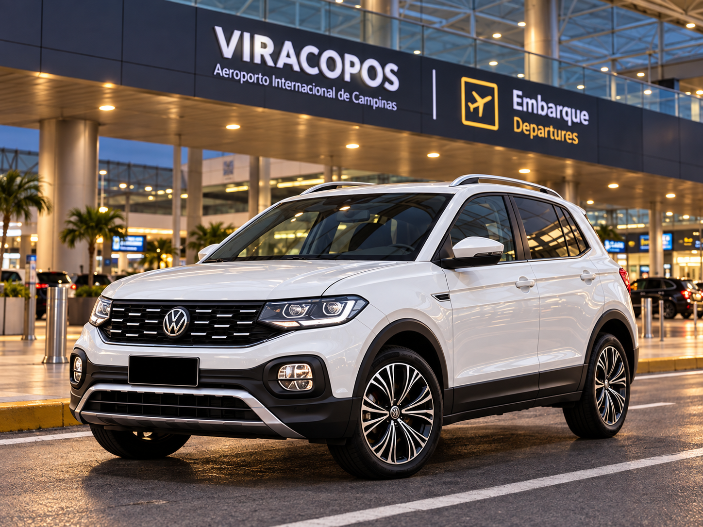

Toyota Corolla Altis Premium Hybrid
Sedã executivo para translados, aeroportos, reuniões e viagens com conforto, elegância e pontualidade.
Transfer Aeroporto
Transfer executivo para embarques e desembarques no Aeroporto Internacional de Viracopos (VCP), com atendimento agendado, conforto, pontualidade e planejamento em cada trajeto.
Transfer para Viracopos
A ViaReserve realiza transfer executivo para o Aeroporto Internacional de Viracopos (VCP) com atendimento previamente agendado e planejamento de acordo com o horário do voo, local de origem e necessidades de cada passageiro.
O serviço é indicado para viagens a trabalho, compromissos particulares, embarques nacionais ou internacionais e deslocamentos que exigem mais conforto, organização e pontualidade.
Atendemos saídas de Indaiatuba, Campinas, São Paulo e outras cidades sob consulta.
Transfer saindo de Viracopos
Também realizamos desembarques com saída de Viracopos para residências, empresas, hotéis, resorts, eventos e outras cidades, com atendimento organizado de acordo com as informações do voo, horário previsto de chegada e destino final.
Conexões entre aeroportos
A ViaReserve realiza deslocamentos entre aeroportos, incluindo trajetos entre Viracopos, Guarulhos e Congonhas.
O serviço é ideal para passageiros que precisam realizar conexões entre aeroportos com horário previamente planejado e atendimento personalizado.
Outras rotas e aeroportos podem ser atendidos mediante consulta.
Viagens para outras cidades
Nem todo passageiro desembarca em Viracopos com destino a Campinas ou Indaiatuba.
A ViaReserve realiza viagens executivas e intermunicipais saindo do aeroporto para diferentes cidades do Estado de São Paulo, conforme agendamento e disponibilidade.
O serviço pode atender viagens para hotéis, resorts, empresas, reuniões, eventos, compromissos particulares e outros destinos.
Solicitar orçamentoPara empresas
Empresas também podem contar com a ViaReserve para o transporte de colaboradores, clientes e convidados em deslocamentos relacionados ao Aeroporto de Viracopos.
O atendimento pode ser utilizado para embarques, desembarques, reuniões, visitas profissionais e viagens corporativas.
Como funciona o atendimento
Informe data, horário, origem, destino, número de passageiros, quantidade de bagagens e informações do voo.
A ViaReserve organiza o trajeto e confirma as informações do serviço.
O motorista realiza o atendimento conforme o local e horário previamente combinados.
O trajeto é realizado com foco em conforto, pontualidade e tranquilidade.
Por que escolher a ViaReserve
Horário previamente agendado
Atendimento personalizado
Planejamento do trajeto
Acompanhamento das informações do voo
Veículos selecionados para diferentes perfis
Atendimento para particulares e empresas
Transfer para VCP, GRU e CGH
Viagens para diferentes cidades do Estado de São Paulo
Veículos
Conheça algumas das opções utilizadas nos atendimentos ViaReserve, selecionadas para oferecer conforto, segurança e uma experiência executiva em cada trajeto.
Sedã executivo para translados, aeroportos, reuniões e viagens com conforto, elegância e pontualidade.

SUV executivo com bancos de couro, ideal para quem prefere mais espaço, versatilidade e conforto.
Perguntas frequentes
Sim. A ViaReserve realiza transfer executivo para embarques e desembarques no Aeroporto Internacional de Viracopos (VCP), mediante agendamento e disponibilidade.
Sim. A ViaReserve realiza deslocamentos entre Viracopos (VCP), Guarulhos (GRU) e Congonhas (CGH), conforme agendamento e disponibilidade.
Sim. Realizamos viagens municipais, intermunicipais e interestaduais para diferentes destinos, conforme consulta e disponibilidade.
Sim. O transporte corporativo atende colaboradores, clientes e convidados, com emissão de nota fiscal e opção de faturamento mediante análise cadastral.
O atendimento é realizado mediante agendamento. Solicitações para o mesmo dia podem ser avaliadas conforme disponibilidade.
As informações do voo podem ser utilizadas no planejamento do atendimento, especialmente em desembarques.
Informe os detalhes do seu trajeto e consulte disponibilidade para o seu atendimento.
Solicitar orçamento pelo WhatsApp